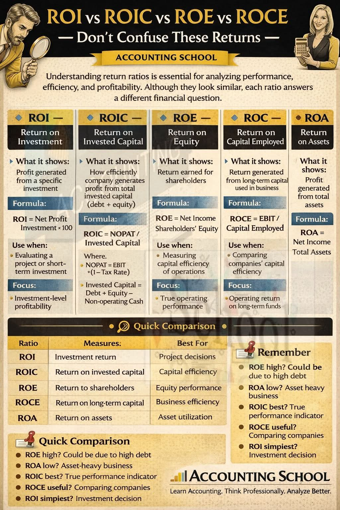

Hujan menderas mengguyur kawasan Cibiru, membasuh debu dari jalanan aspal Bandung Timur yang tak pernah sepi. Di lantai tiga sebuah gedung bercat abu-abu minimalis, lambang "Pusat Kajian Ekonomi dan Bisnis Terapan" terpampang elegan. Ruang rapat utama di ujung koridor itu terasa pengap oleh ketegangan, kontras dengan udara dingin yang menusuk dari luar jendela kaca. Aroma kopi Arabica dari wilayah utara Bandung menguar, namun tak mampu meredakan urat syaraf empat peneliti senior yang tengah berdebat sengit.
Mereka adalah representasi kelas menengah terdidik: pragmatis, analitis, dan memiliki ego intelektual yang terasah. Di meja oval itu duduk Bramantyo, sang Direktur Riset; Dr. Kirana, Kepala Metodologi; Adrian, Analis Finansial Muda; dan Nadia, Spesialis Evaluasi Proyek. Klien mereka kali ini bukan main-main: sebuah konglomerasi manufaktur raksasa yang tengah menghadapi krisis inefisiensi dan meminta rekomendasi restrukturisasi total.
"Kita harus kembali ke fundamental," suara Bramantyo memecah keheningan, berat dan berwibawa. Ia mengetuk layar tabletnya. "Memahami rasio pengembalian adalah esensial untuk menganalisis kinerja, efisiensi, dan profitabilitas. Meskipun terlihat mirip, kita semua tahu bahwa setiap rasio menjawab pertanyaan keuangan yang berbeda. Klien kita bingung, dan jujur saja, draf laporan kita saat ini juga membingungkan."
Adrian, pria 29 tahun dengan kemeja slim-fit dan kacamata berbingkai tipis, mencondongkan tubuhnya ke depan. "Saya tidak melihat kebingungannya, Mas Bram. Angka tidak pernah berbohong. Perusahaan mencetak rekor laba bersih tahun ini. ROE mereka menyentuh dua puluh lima persen. Laporan kita harus berpusat pada pencapaian ini."
Kirana, wanita berusia awal tiga puluhan yang baru saja menyelesaikan gelar doktornya di bidang Akuntansi Manajerial, menghela napas panjang. Ia memutar pulpen di sela jari lentiknya.
"Adrian, secara akademis, mengandalkan satu metrik untuk menyimpulkan kesehatan perusahaan adalah bunuh diri analitis," ucap Kirana dingin. "Kamu melihat ROE atau Return on Equity, yang secara definisi menunjukkan pengembalian yang diperoleh oleh pemegang saham. Formulanya sederhana:"
"Ya, betul! Ini metrik terbaik untuk mengukur performa ekuitas. Pengukuran ini fokus pada pengembalian kepada investor," sela Adrian cepat. "Dalam Quick Comparison kita, secara jelas metrik ini untuk Equity performance."
"Tapi kamu lupa satu hal krusial," sahut Kirana, nada suaranya naik setengah oktaf, menunjukkan ketidaksabaran khas akademisi ketika mahasiswanya melewatkan premis dasar. "Remember: ROE high? Could be due to high debt. Apakah kamu sudah memeriksa struktur modal klien kita? Laba bersih mereka memang naik sedikit, tapi ekuitas pemegang saham menyusut karena mereka baru saja menerbitkan obligasi triliunan rupiah. Utang yang tinggi secara matematis akan mengecilkan penyebut dalam formula ROE, membuat rasionya tampak meroket padahal risiko kebangkrutan mengintai. ROE yang tinggi di sini adalah ilusi leverage."
Bramantyo mengangguk setuju. "Kirana benar. Kita tidak bisa memberikan laporan yang menyesatkan direksi. Laporan ini bernuansa manajerial, bukan sekadar brosur promosi saham."
Nadia, yang sedari tadi sibuk membolak-balik berkas evaluasi proyek fisik pabrik, akhirnya angkat bicara. Ia merapikan rambut sebahunya yang sedikit berantakan. "Saya sepakat kita tidak bisa hanya melihat level korporat atau ekuitas. Tapi melihat keseluruhan modal juga terlalu mengawang-awang. Masalah klien kita ada di lapangan. Banyak investasi mesin baru yang menganggur. Kita harus membedah ini dengan ROI."
Nadia berdiri, berjalan ke papan tulis putih di sudut ruangan, dan mengambil spidol.
"Dengar, klien kita memiliki puluhan lini produksi. Kita perlu mengevaluasi investment-level profitability—profitabilitas di tingkat investasi spesifik. What it shows dari ROI atau Return on Investment adalah profit yang dihasilkan dari investasi spesifik tersebut." Nadia menuliskan rumusnya dengan cepat:
"Ini adalah rasio yang paling sering diabaikan manajer operasional karena terlalu sibuk melihat laporan konsolidasi," lanjut Nadia. "Use when: Mengevaluasi sebuah proyek atau investasi jangka pendek. Contoh akademisnya: klien menginvestasikan lima miliar rupiah untuk mesin packaging baru, dan net profit dari efisiensi mesin itu adalah satu miliar. ROI-nya jelas dua puluh persen. Remember: ROI simplest? Investment decision. Ini metrik paling sederhana, dan paling baik untuk Project decisions."
Adrian mendengus pelan, bersandar di kursinya. "Itu terlalu mikro, Nad. Terlalu myopic. ROI tidak memperhitungkan nilai waktu uang dan durasi proyek secara komprehensif untuk skala korporasi raksasa. Direksi tidak mau pusing melihat ribuan baris ROI dari setiap mesin."
"Tapi dari sanalah inefisiensi berasal, Adrian!" balas Nadia tak kalah tajam. "Kamu tidak bisa memperbaiki mesin yang rusak hanya dengan mengecat ulang kapalnya! Kalau kita ingin tahu utilitas aset mereka secara keseluruhan, kita gunakan ROA."
Nadia menulis lagi di papan tulis. "ROA atau Return on Assets. Ini menunjukkan profit yang dihasilkan dari total aset."
"Ini metrik yang mengukur Return on assets, dan sangat baik untuk melihat Asset utilization. Tapi, ingat peringatan ini: ROA low? Asset-heavy business. Klien kita ini perusahaan manufaktur, sangat padat modal. Wajar jika ROA mereka rendah karena penyebut total asetnya raksasa. Menyalahkan direksi operasional hanya karena ROA di bawah rata-rata industri teknologi, misalnya, adalah sebuah kesalahan perbandingan fundamental!"
Bramantyo mengangkat tangan, menghentikan perdebatan yang mulai memanas di antara dua analisnya itu. Hujan di luar semakin deras, kilat menyambar memendarkan cahaya putih di ruang rapat, disusul gemuruh guntur yang beresonansi di dada.
"Cukup. Nadia, pendekatan mikromu penting. Adrian, kekhawatiranmu soal nilai pemegang saham juga valid. Tapi kita ini Pusat Kajian. Kita dibayar mahal untuk menyajikan gambaran utuh, bukan potongan-potongan teka-teki," kata Bramantyo dengan ketegasan seorang manajer yang telah makan asam garam dunia konsultasi.
Bramantyo berdiri dan mengambil alih spidol dari tangan Nadia. "Masalah utama klien kita adalah efisiensi operasional dibandingkan dengan pesaing-pesaingnya. Untuk itu, saya mengajukan ROCE, Return on Capital Employed."
Ia menuliskan rumus dengan huruf kapital besar:
"Definisi akademisnya," Bramantyo mulai menjelaskan dengan gaya seorang dosen tamu, "What it shows: Return yang dihasilkan dari modal jangka panjang yang digunakan dalam bisnis. Fokus dari ROCE adalah Operating return on long-term funds. Laba sebelum bunga dan pajak, atau EBIT, mencerminkan pendapatan operasional inti. Sementara Capital Employed menyingkirkan kewajiban jangka pendek."
Bramantyo menatap ketiga rekannya bergantian. "Use when: Metrik ini digunakan untuk membandingkan efisiensi modal antar perusahaan. Kalian ingat Quick Comparison kita? ROCE mengukur Return on long-term capital dan merupakan yang terbaik untuk mengukur Business efficiency. Remember: ROCE useful? Comparing companies. Klien kita ingin tahu posisi mereka melawan kompetitor dari Tiongkok dan Vietnam. ROCE adalah senjata kita untuk menjawab itu."
Ruangan hening sejenak. Argumen Bramantyo sangat solid secara manajerial. Namun, senyum tipis mengembang di bibir Kirana. Wanita itu sedari tadi memandangi sebuah infografis referensi dari Accounting School yang tergeletak di atas meja Adrian.
"Mas Bram, ROCE memang bagus untuk perbandingan eksternal," ucap Kirana lembut namun sarat otoritas intelektual. "Tapi jika kita ingin benar-benar membedah jantung operasi perusahaan klien kita dan mengukur efisiensi internal mereka secara absolut, ada satu raja dari segala rasio."
Kirana berdiri. Ia tidak berjalan ke papan tulis, melainkan memproyeksikan layar tabletnya ke TV layar datar di dinding. Muncul tulisan ROIC yang tebal.
"ROIC, Return on Invested Capital," sebut Kirana. "Ini adalah metrik fundamental. What it shows: Bagaimana efisiennya perusahaan menghasilkan profit dari total modal yang diinvestasikan, baik dari utang maupun ekuitas."
Kirana menampilkan deretan rumus yang mengintimidasi namun indah bagi seorang akademisi keuangan:
"Di mana," Kirana menjabarkan dengan nada presisi, "NOPAT adalah Net Operating Profit After Tax. Kita melihat laba murni dari operasi inti setelah dipotong pajak operasional yang sebenarnya, tanpa distorsi dari beban bunga."
Ia melanjutkan, "Lalu penyebutnya: Invested Capital. Kita secara spesifik mengeluarkan kas yang tidak beroperasi—kas yang menganggur di bank—karena kas tersebut tidak ikut bekerja dalam operasi inti. Ini sangat krusial bagi klien kita yang kebetulan memiliki cash pile besar namun operasi pabriknya berdarah-darah."
"Tunggu," potong Adrian, keningnya berkerut. Ia menunjuk infografis Accounting School yang ada di mejanya. "Mbak Kira, di infografis yang kita jadikan acuan cheat-sheet ini, di kolom ROE juga tertulis Use when: Measuring capital efficiency of operations dan Focus: True operating performance. Bukankah ROE juga bisa untuk itu?"
Kirana tertawa kecil, tawa renyah yang sering ia keluarkan saat menemukan anomali dalam jurnal penelitian.
"Adrian, itu justru bukti mengapa kita tidak boleh menelan mentah-mentah sumber sekunder, sehebat apa pun desain visualnya. Infografis itu mengalami kesalahan copy-paste dari desainer grafisnya!"
Kirana menunjuk ke layar. "Lihat baik-baik. Teks Measuring capital efficiency of operations dan Focus: True operating performance secara akademis adalah milik ROIC. Di dalam infografis itu, teks tersebut secara tidak sengaja terduplikasi dan masuk ke dalam kotak ROE."
Bramantyo, Nadia, dan Adrian sontak menunduk, meneliti lembaran cetak infografis di meja mereka masing-masing.
"Astaga, kamu benar," gumam Nadia, matanya membesar. "Seharusnya fokus ROE adalah pada equity returns, bukan operating performance."
"Tepat," sambung Kirana, wajahnya berseri-seri karena telah mengungkap sebuah 'kebenaran'. "Oleh karena itu, secara akademis, ROIC lah yang mengukur Return on invested capital. Ia yang terbaik untuk Capital efficiency. Use when: Measuring capital efficiency of operations. Dan fokus utamanya adalah True operating performance."
Kirana menatap Adrian lurus-lurus. "Remember: ROIC best? True performance indicator. Jika ROIC klien kita lebih kecil dari WACC—Weighted Average Cost of Capital—maka pada dasarnya perusahaan itu sedang menghancurkan nilai, tidak peduli setinggi apa pun ROE yang kamu banggakan tadi akibat leverage utang."
Ruang rapat itu hening. Hanya suara hujan dari langit Bandung Timur yang mengisi jeda panjang tersebut. Analisis Kirana memukul telak, mementahkan perdebatan, sekaligus menyatukan semua kepingan teka-teki.
Konflik yang tadinya meruncing kini perlahan mencair, digantikan oleh kekaguman dan pemahaman yang lebih dalam. Kesombongan intelektual masing-masing lebur dalam kohesi sebuah tim yang menyadari bahwa mereka baru saja menemukan akar masalah klien mereka.
Bramantyo adalah yang pertama tersenyum. Ia menutup spidolnya dengan bunyi klik yang nyaring. "Sebuah kelas master, Dr. Kirana. Saya setuju. Kita akan membangun narasi laporan kita dengan kerangka ini."
Bramantyo kembali ke tempat duduknya dan mulai mengetik di laptopnya. "Mari kita buat dashboard manajerial yang komprehensif. Laporan kita akan berbunyi seperti ini: Pertama, kita gunakan ROIC sebagai true performance indicator untuk menunjukkan bahwa efisiensi modal operasi mereka sebenarnya sedang menurun, mengoreksi ilusi dari ROE yang tampak tinggi karena utang, dengan catatan ROE high? Could be due to high debt."
Nadia menyahut dengan semangat baru, "Lalu, untuk mengidentifikasi di mana letak kebocoran efisiensi itu, kita akan membedah divisi-divisi mereka menggunakan ROA untuk melihat asset utilization pada bisnis padat karya ini, sambil mengingatkan direksi bahwa ROA low? Asset-heavy business."
"Dan pada level operasional yang paling bawah," tambah Adrian, yang kini telah mengesampingkan ego metrik tunggalnya, "kita akan merekomendasikan penggunaan ROI sebagai alat utama untuk Project decisions ke depannya. Keputusan investasi mesin baru harus lolos standar karena ROI simplest? Investment decision."
"Sempurna," kata Kirana, mematikan proyektornya dan kembali duduk. "Dan untuk membungkus semuanya agar terlihat seksi di mata investor eksternal dan direksi, kita sandingkan kinerja keseluruhan mereka dengan kompetitor menggunakan ROCE untuk melihat Business efficiency, dengan highlight: ROCE useful? Comparing companies."
Hujan di luar mulai mereda, menyisakan rintik gerimis dan aroma petrichor yang masuk perlahan melalui celah ventilasi. Langit sore di arah Jatinangor mulai memancarkan semburat jingga kemerahan.
Keempat peneliti itu saling berpandangan. Konflik metodologis yang tajam telah menjelma menjadi kolaborasi analitis yang brilian. Mereka menyadari bahwa dunia manajerial dan keuangan bukanlah ilmu pasti yang kaku, melainkan seni merangkai berbagai lensa untuk melihat realitas bisnis yang kompleks. Memahami perbedaan antara Profit generated from specific investment, Profit generated from total assets, Return earned for shareholders, Return generated from long-term capital, dan Profit from total invested capital adalah kunci untuk memecahkan masalah apa pun.
Bramantyo mengangkat cangkir kopinya yang sudah dingin. "Untuk analisis yang solid, rekan-rekan. Learn Accounting. Think Professionally. Analyze Better."
"Amin untuk itu," jawab mereka serempak, sebelum kembali menenggelamkan diri dalam tumpukan data, siap menyelesaikan laporan bernilai miliaran rupiah tersebut. Di Pusat Kajian Ilmiah ini, angka tidak hanya sekadar dihitung, tetapi dicerna, diperdebatkan, dan akhirnya, dipahami.